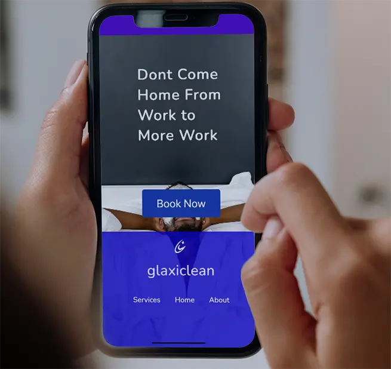
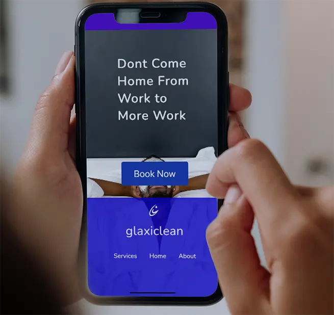

Cleaning companies are a dime a dozen. Glaxiclean’s different. glaxiclean is a cleaning company that wanted to differentiate itself from it’s competition. I was approached for a website for customers to learn about Glaxiclean, as well as a logo and buisinesscard.
research found that competitors in the home cleaning buisiness had similar branding and voice. In order to differentiate itself from the competition, the goal was to differentiate Glaxiclean through a bespoke brand identity that still remained recognizable as a home cleaning service provider. This was achieved through the use of graphics that invoke the act of cleaning itself as well as the logo.


 
